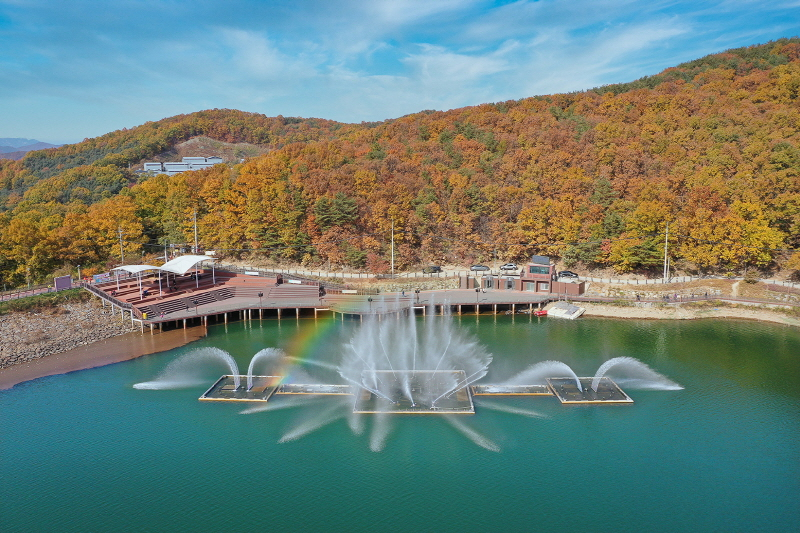
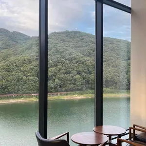
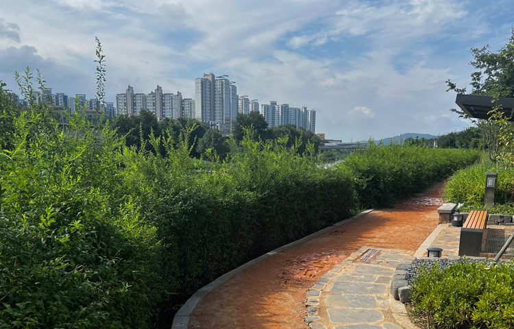
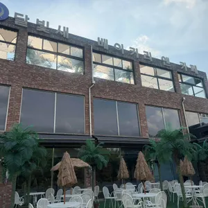
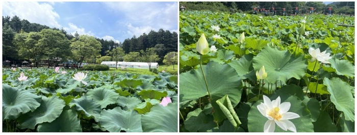

1순위 오남호수공원. 후탄 바로 옆 물가라 이동 리스크가 작고, 주차 후 노을색과 산 능선을 함께 보기 좋음.
1위 · 오늘 1순위 82/100

남양주시 공식 사진 · 과거 자료, 오늘 풍경 아님
후탄에서 차로입구 1분 · 0.1km / 공영주차장 5분 · 1.5km
네비 주소공원: 경기 남양주시 오남읍 팔현로 85-1
주차: 오남제3공영주차장, 오남리 41
왜 여기인가넓은 수면 + 산 능선 실루엣. 수변 데크 중 서쪽 하늘이 열리는 곳을 선택하는 계획임. 정확한 최적 데크 지점은 미검증. 바다 같은 열린 수평선은 아니며, 해가 능선 뒤로 먼저 숨을 수 있음.
주차와 관찰 위치오남제3공영주차장 112면. 운영자 안내 08:00~20:00, 법정공휴일은 무료 운영(일요일 제외). 오늘 10/5는 개천절 대체공휴일이라 게시 규정상 무료 대상. 현장 특별 통제·만차 여부는 미확인. 주차 후 데크로 이동. 주차면에서 수면·해가 보인다는 근거 없음.
몇 시에 갈까17:20~17:30 도착, 17:30까지 서쪽 하늘이 트인 데크 확보. 18:09 전후 색 변화, 18:30 전후 여운까지.
후기 읽기Google 4.4/555개. 일반 산책 만족도이지 선셋 별점은 아님. 공식 전망데크·3.27km 둘레길 확인.
추천: 가장 가까운 물가. 차 안 감상 보장 아님. 분수 운영시간은 검증하지 않았으므로 분수쇼는 계획에 넣지 않음.
2위 · 이동 없는 대안 80/100

다이닝코드 이용자 사진 · 호수 조망 예시, 선셋 사진 아님
후탄에서 차로0분 · 출발지 자체
네비 주소경기 남양주시 오남읍 팔현로 81
왜 여기인가직접 방문후기에 ‘시티뷰 보며 일몰뷰 보기 좋음’이 명시됨. 다른 후기는 상층 테라스·호수 조망 확인. 호수 방향 좌석이 반드시 해 지는 방향은 아니므로 서쪽 하늘이 열리는 쪽을 선택하는 게 핵심.
주차와 관찰 위치카페 전용 주차. 후기에 넉넉한 주차, 주말 혼잡 언급. 구매·이용 조건과 오늘 추가 주차비는 현장 규정 우선. 차를 두고 상층/야외 조망 자리로 이동.
몇 시에 갈까17:20~17:30에 서쪽 하늘이 보이는 자리 확보. 이미 여기라면 굳이 장거리 이동할 이유 적음.
후기 읽기다이닝코드 4.2/70명, 경관·야경 언급 다수. 직접 일몰 관찰 후기를 일반 분위기 후기보다 높게 반영.
영업시간 후기 10~22시(금·토·공휴일 전날 자정). 오늘 테라스 개방과 정확한 서쪽 자리의 현장 시야는 미확인.
3위 · 조건부 대안 70/100

남양주시 공식 사진 · 과거 자료
후탄에서 차로공원 주소 16분 · 5.5km / 공영주차장 17분 · 7.7km
네비 주소공원: 경기 남양주시 진접읍 장현리 317
주차 후보: 진접노상제3공영주차장(카카오: 장현리 288-1)
왜 여기인가왕숙천과 가까운 친수공간, 1km 테마 산책길. 하늘이 넓게 보이는 하천 쪽이 해질녘 산책에 적합함. 실제 태양 원반이 끝까지 보이는 서향 포인트는 검증하지 못함.
주차와 관찰 위치별도 공원 전용 주차는 미확인. 도시공사 진접노상 제3공영 12면 확인. 운영자 장현리 349-8, 카카오 288-1로 표기 차이 있어 이름 검색 권장. 주차장에서 공원 진입 보행 동선은 미검증.
몇 시에 갈까17:15~17:25까지 도착. 주차·공원 접근에 여유 필요. 18:09 전후부터 경관조명 산책으로 이어가기 좋음.
후기 읽기2025년 6월 조성, 공식·2025년 7월 개방 보도 확인. 잘못 검색된 장승다담공원의 별점은 가져오지 않음.
조건부: 하천 산책은 좋지만 주차·서향 시야 증거가 1~2위보다 약함. 12면 만차 가능.
4위 · 카페형 조건부 64/100

다이닝코드 이용자 사진 · 옥상/외관 예시
후탄에서 차로15분 · 8.0km
네비 주소경기 남양주시 진접읍 금강로782번길 292-21
이름 ‘달빛새베이커리앤카페’로 검색 권장
왜 여기인가왕숙천 인근 정원·야외좌석·옥상 공간이 있어 해질녘 하늘색 감상에 맞음. 서쪽 지평선/일몰 원반 조망 증거는 부족, 노을카페로 단정하지 않음.
주차와 관찰 위치2026년 1월 직접후기 넓은 흙바닥 주차장 확인. 다이닝코드 무료주차 언급 17건. 차 안보다 정원/개방된 옥상 자리 후보. 오늘 옥상 개방은 미확인.
몇 시에 갈까17:15~17:30 도착. 18:09 전후 관찰 후 18:30 전에 주문 마무리하는 계획.
후기 읽기Google 3.7/632개, 다이닝코드 3.6/17명. 주차·공간은 좋지만 별점으로 맛이나 선셋을 높게 평가하지 않음.
주소 충돌: Google은 금강로 1032, 카카오·관광자료는 782번길 292-21. 현행 카카오 이름 검색으로 경로 확인. 후기·관광자료 11~19시/18:30 주문 마감, 휴무일 서로 다름.
5위 · 호수 접근 대안 58/100
다이닝코드 이용자 사진 · 카페 예시, 호수/선셋 증거 아님
후탄에서 차로8분 · 2.4km
네비 주소경기 남양주시 오남읍 진건오남로690번길 121
왜 여기인가호수 둘레길과 바로 연결된 카페. 물·산의 저녁 분위기는 가능하나 좌석의 호수 조망이 부분적이라는 후기 있음. 북쪽 호수의 다른 접근점이지 별개의 호수 명소는 아님.
주차와 관찰 위치다송과 공유하는 주차장, 카페 앞 주차 가능 후기. 2024 후기 약 8대 표기는 오래된 자료. 좁은 진입로·교행 불편 후기 있어 운전 편의는 감점.
몇 시에 갈까17:15~17:30 도착. 야외자리보다 가까운 수변 산책로의 트인 지점을 우선. 해질녘 이동 시 주차부터 끝내기.
후기 읽기다이닝코드 3.7/8명. 작은 표본이라 높은 신뢰 주지 않음. 직접후기 좁은 길·부분적 호수뷰를 반영.
조건부: ‘선셋 명소’ 증거 부족. 운영시간 21시/22시로 자료 충돌, 일몰시간대까지 영업하는 자료는 일치하나 오늘 실제 운영 미확인.
6위 · 저녁 산책용 52/100

매일경제 여행 기사 사진 · 여름 연꽃 자료, 10월 현재 사진 아님
후탄에서 차로26분 · 12.6km
네비 주소경기 남양주시 진접읍 봉선사길 32
입구 주차장: 봉선사 주차장 검색
왜 여기인가연못·데크·숲 능선의 차분한 저녁 분위기. 직접후기에 일몰 무렵 하늘·연밭·조명 조합 언급. 산과 숲이 가려 해 원반 감상보다는 해질녘 산책용.
주차와 관찰 위치사찰 입구/안쪽 주차장 존재. 2026년 7월 후기 유료: 최초 10분 1,200원, 이후 10분당 200원. 다른 자료는 최초 30분 무료라 서로 다름. 무료라고 단정하지 않고 현장 요금표 우선.
몇 시에 갈까17:00~17:15 도착. 숲으로 해가 빨리 가려질 수 있어 18:09 직전에 도착하는 일정은 비추천.
후기 읽기Google 4.5/2,878개는 사찰 전체 만족도. 일몰 별점 아님. 2025년 여름 저녁 후기는 분위기 참고만, 10월 연꽃 만개 기대 금지.
선셋 원반 목적이면 1~2위 우선. 26분은 지금 경로값이고 저녁 교통·휴일 귀가 차량에 따라 30분 넘을 수 있음.
7위 · 탐색 후보 45/100
정확한 수변 지점 사진 미확보
정확한 수변 지점 사진 미확보
후탄에서 차로퇴계원 제3공영주차장까지 21분 · 11.2km
네비 주소주차: 경기 남양주시 퇴계원읍 경춘북로 527-1
수변 지도 핀: 퇴계원리 150-2
왜 여기인가왕숙천 수면·둔치의 하늘을 보는 후보. ‘왕숙천 자전거길’ 지도 핀은 확인했지만, 정확한 서향 관찰 지점과 주차장→산책로 진입은 미검증.
주차와 관찰 위치도시공사 퇴계원 제3공영 128면. 카카오 지번 314-38, 운영자 도로명 경춘북로 527-1, 민간자료 218-8 표기가 충돌. 이름 검색 우선. 자동차를 둔치로 직접 진입시키는 계획 아님.
몇 시에 갈까17:00~17:15 도착하더라도 보행 접근 확인 필요. 오늘 즉흥 선셋 1순위로는 비추천.
후기 읽기지도 자전거길 4.5/2개라 거의 점수에 반영 안 함. 구리시 왕숙천체육공원과 혼동하지 않음.
탐색 후보: 차량 30분은 주차장까지 확인, 실제 뷰 포인트까지는 확인되지 않음. 조건 충족 확정 명소처럼 추천하지 않음.
오늘 동선
17:20~17:30에 오남호수 수변 도착 → 해가 지는 서쪽 하늘을 보고 시야가 열린 데크 선택 → 17:40부터 능선·물빛 촬영 → 18:09 전후 노을 → 약 18:35 시민박명 종료 전후까지 관찰. 해가 산에 가려도 하늘색은 남을 수 있음.
후탄에 이미 주차했다면 이용 조건을 지키면서 카페 상층 조망 또는 인접 수변을 먼저 보는 게 효율적임. 카페 주차를 공원 무료주차처럼 무단 사용하지 않기. 갓길·제방에 차 세우고 보는 안은 추천하지 않음.
시간과 경로의 정확도
남양주 일몰표: 오늘 18:08:58. 별도 표 18:09. 예보 도구 18:08. 후탄 좌표 계산 API는 18:10:35로 약 2분 차이 있음. 계산 기준·좌표 차이를 고려해 약 18:09로 안내하며, 현장 산 능선의 가림은 반영되지 않음.
카카오맵 자동차 ‘내비추천’, 후탄 출발, 15:42~15:48 실시간 경로값. 공원 중심·카페·주차장 등 종점을 구분함. 17시대 출발 예측값이 아니며, 휴일 귀가 교통에는 더 걸릴 수 있음. 진접·봉선사는 시간 여유를 더 잡아야 함.
점수는 이렇게 매겼음
선셋 적합성 40 + 접근성 25 + 주차·보행 편의 20 + 증거 신뢰 15 = 100점. 총점은 리서치 판단 점수이며 방문자 별점 아님. 6위까지도 모두 ‘태양 원반 명소’로 검증된 것은 아님. 3~7위는 명시한 약점 때문에 낮게 평가함.
Google·다이닝코드 별점은 출처와 표본 수를 분리. 8명·2개 같은 작은 표본은 크게 감점. 장승다담공원 별점은 장현공원에 전용하지 않음. 봉선사의 높은 별점 역시 선셋 품질과 별개.
30분 조건에서 제외: 다산수변공원
다산순환로 149, 후탄 출발 37분·19.0km. 왕숙천 서쪽 하늘과 물가가 매력적이어도 이번 조건에서는 제외. 옛 ‘15면 무료’ 자료 대신 도시공사 현행 39면 자료 확인. 7위 퇴계원 역시 주차장까지 21분일 뿐, 뷰 포인트 보행 접근 미검증이라 적극 추천하지 않음.
오래된 정보·충돌 주의
오남 주차 ‘항상 무료’ 옛 후기는 2025년 5월 유료화 전 자료일 수 있음. 다만 운영자에 법정공휴일 무료 예외가 있고, 오늘 10/5는 우주항공청 월력요항상 개천절 대체공휴일이라 게시 규정상 무료 대상임. 달빛새 주소·휴무, 브레드포레 폐점시각, 봉선사 주차 무료시간은 자료가 서로 달라 그대로 표시함. 오늘 실제 영업·만차·테라스 개방은 확인되지 않았음. 오래된 여름 연꽃·분수 사진은 현재 상태 증거 아님.